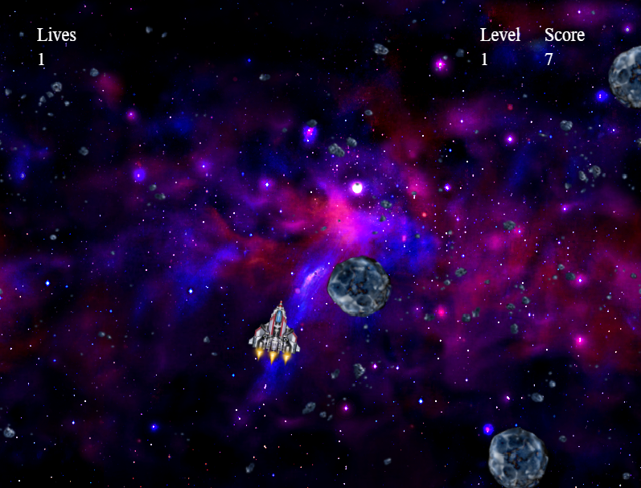

Python Programmer
Grand Rapids, MI
I designed a one-player game similar to Asteroids by Atari, Inc. The program uses separate classes for images, the spaceship, and the asteroids/missiles. Primary functions include key handlers, a draw function, an asteroid spawner, and functions to test for collisions between missiles and asteroids and the ship and asteroids. This Python program runs using three imported packages, simpleguitk, math, and random.
To begin the game and exit the splash screen, a player needs to click the mouse. The player can thrust the spaceship forward using the forward arrow key and can turn the spaceship using the left or right arrow key. The spaceship will slowly reduce its forward progress after the forward arrow key is released back up. The space bar fires missiles. Points are awarded when a missile hits an asteroid. If an asteroid hits the spaceship, one life is lost. A player starts with 3 lives, and at 0 lives, a new game is started. Up to 10 asteroids are generated at a time, one per second, and all with varying forward velocity, spin velocity, and spin direction. As the player destroys more asteroids and moves up in levels in the game, the asteroids increase in velocity.
My next step on this program is to add the image of an explosion when a missile hits an asteroid or an asteroid hits a spaceship. After the program was working in CodeSkulptor (an interactive, web-based Python programming environment that allows Python code to be run in a web browser), I ran into an issue in which the spaceship remained in thrust or turned left when the forward arrow key or left arrow keys were pressed. I suspect the issue is either with an update to CodeSkulptor or Google Chrome since a similar issue appeared with another program and since this program was bug-free for a couple of months.
Go to my repository in GitHub to see my code or click on this link to run this program in CodeSkulptor.
{kind=link}